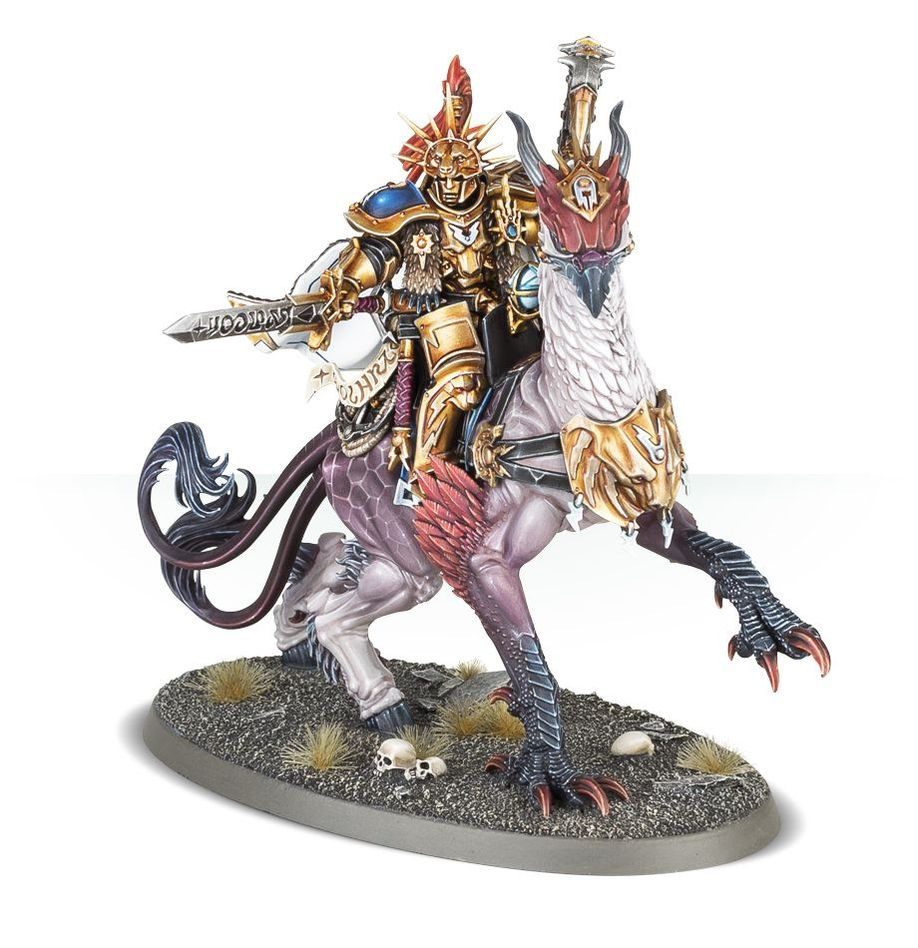
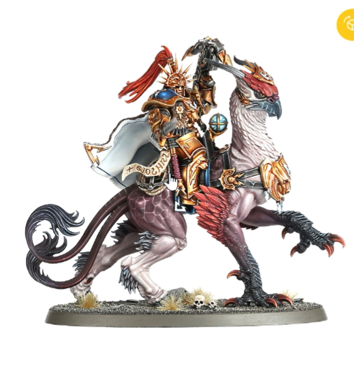
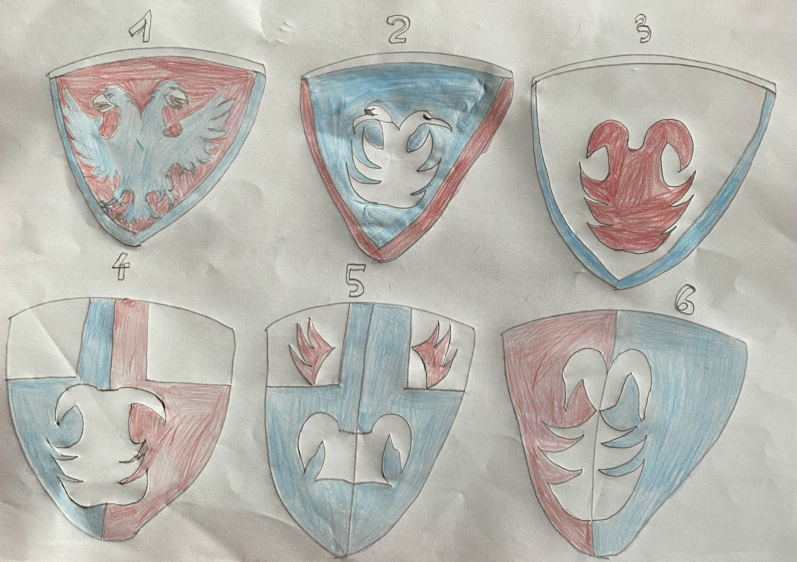
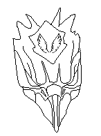

Pitch
Création d'armoiries pour des figurines de combat du jeu
Warhammer 40k.
Exemples d'armoiries :
Étapes du projet
Étape 1 : Recherches et briefing
- Armée futuriste basée sur les Grenadiers de Napoléon
- Charte colorimétrique : Bleu / Blanc / Rouge / Noir
- Figurines coiffées d'une toque en fourrure ou plumage
- Esprit : Loyauté et puissance
- Emblème : Tête bicéphale de l'aigle impérial
- Support : Drapeaux de l'armée (max 400×350mm)
Animal symbolique choisi : Gryph-charger


Étape 2 : Brouillons
Premières esquisses



Étape 3 : Maquettes couleurs
Avec contours
Contours et couleurs pleines
Contours et ailes
Étape 4 : 2ème briefing
Demande du client de modifier les ailes :
✨ Maquette finale acceptée ✨
Les Grenadiers d'Asgard - Armoiries officielles approuvées